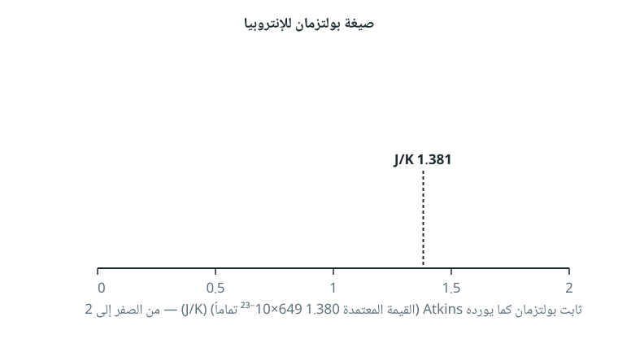

صيغة بولتزمان للإنتروبيا
Boltzmann Entropy Formula
الإنتروبيا الإحصائية S = k_B ln W هي ثابت بولتزمان مضروبًا في لوغاريتم عدد الحالات المجهرية المتاحة عند طاقة كلية معطاة؛ وهي الطريق الذي يحسب الإنتروبيا من بنية النظام الداخلية لا من حرارة مقيسة.
صيغة بولتزمان للإنتروبيا تكتب الإنتروبيا دالةً في عدد الحالات المجهرية: S = k_B ln W، حيث k_B ثابت بولتزمان بالقيمة المعتمدة 1.380 649×10⁻²³ J/K، وW عدد الحالات المتاحة للنظام عند طاقته الكلية. يعرضها Atkins في الموضوع 3A كتعريف إحصائي للإنتروبيا، ويضمّنها IUPAC في مدخل entropy بالصيغة نفسها.
معنى الرقم في حالة قابلة للعدّ: نظام من عشر جسيمات لكل منها حالتان، وطاقته الكلية لا تسمح إلا بخمسة في الحالة العليا، له W = C(10,5) = 252 ترتيبًا، فتكون S = 1.380 649×10⁻²³ × 5.5294 = 7.634×10⁻²³ J/K. ولو رُفع القيد الطاقي فسُمح بأي عدد صار W = 2¹⁰ = 1024 وارتفعت S إلى 9.569×10⁻²³ J/K، أي بنسبة 25.4% مع تضاعف W أربع مرات تقريبًا.
اللوغاريتم هو ما يجعل الإنتروبيا قابلة للتجميع: مضاعفة عدد الجسيمات تضرب W في عدد هائل، لكنها تضيف إلى الإنتروبيا مقدارًا ثابتًا لكل جسيم، فيصير S على المستوى العياني مقدارًا مكثّفًا لا ينفجر مع حجم النظام. ولهذا تُجمع إنتروبيا نظامين مستقلين بالجمع المباشر بينما لا يُجمع عددهما المجهري W إلا بالضرب.
والصيغة لا تعطي الإنتروبيا المطلقة إلا بعد تحديد فضاء الحالات وطريقة عَدّه؛ في الغاز المثالي تُقسم مساحة الطور إلى خلايا حجمها h³ لكل درجة حرية، ومن هذا التقسيم تخرج ثوابت مثل سعة الحرارة المطلقة. ولهذا تُقرأ S كدالّة حالة تُقاس تغيّراتها، لا كمقدار يبدأ من صفر طبيعي.
كيف تعمل الظاهرة؟
في نظام معزول بطاقة كلية ثابتة تتبادل الجسيمات الطاقة فيما بينها، فتتنقل الحالة المجهرية بين ترتيبات كثيرة لا تُفرّق بينها أي قياس عياني. عدد هذه الترتيبات يُحسب توافقيًا: عدد ترتيبات توزيع معيّن يساوي مضروب عدد الجسيمات مقسومًا على جداء مضاريب أعداد كل مستوى. ولأن الترتيبات متساوية الوزن في المجموعة الدقيقة، فالحالة العيانية التي تُرصد هي التي تُحصي أكبر عدد منها، وهذا هو معنى التوازن الإحصائي. لوغاريتم الجداء يصير مجموع لوغاريتمات، فتخرج الإنتروبيا دالّة قابلة للتجميع على أجزاء النظام، وهو الشرط الذي يجعلها دالّة حالة في الديناميكا الحرارية. وكل هذا مشروط بأن الترتيبات متساوية الاحتمال، أي بأن النظام استرخى إلى توازن إحصائي.
العلاقة بالأرقام
k_B = 1.380 649×10⁻²³ J/K، وln W عدد بلا وحدة، فالوحدة J/K. في مثال عشر جسيمات ثنائية الحالة: W = 10!/(5!·5!) = 3 628 800/(120×120) = 252؛ ثم ln 252 = 5.5294؛ ثم S = 1.380 649×10⁻²³×5.5294 = 7.634×10⁻²³ J/K. وبرفع القيد الطاقي: W = 2¹⁰ = 1024، وln 1024 = 6.9315، وS = 9.569×10⁻²³ J/K؛ والنسبة 6.9315/5.5294 = 1.2536 أي زيادة 25.4% في S مقابل 1024/252 = 4.06 أضعاف في W. وللمقارنة المولية: 7.634×10⁻²³×6.022 140 76×10²³ = 45.97 J/(mol·K)، وهو نفسه R ln 252 = 8.3145×5.5294. ولمضاعفة حجم مول غاز مثالي: ΔS = R ln 2 = 8.3145×0.6931 = 5.763 J/K.
مفاهيم متقاربة
التعريف العياني dS = dq_rev/T عددي على الحدود: يحتاج مسارًا عكوسًا وحرارة مقيسة، ولا يقول شيئًا عن البنية الداخلية ولا عن عدد الترتيبات. تعريف بولتزمان لا يحتاج مسارًا ولا حرارة، بل بنيةً مجهرية وعددًا. ويتساوى التعريفان عند التوازن لأن الحرارة العكوسة هي ما يحرّك توزيع الطاقة بين المستويات، ولأن كلًّا منهما دالّة حالة. أما إنتروبيا شانون H = −Σ p ln p فمقياس معلومات بالبت، ولا تحمل وحدة فيزيائية ولا k_B؛ تصير إنتروبيا حرارية إن ضُربت في k_B واستُعمل توزيع فيزيائي. وصيغة بولتزمان لا تصلح لتوزيع غير متساوٍ؛ هناك تُستعمل صيغة جيبس S = −k_B Σ p_i ln p_i، وهي أعمّ، وبولتزمان حالتها حين تتساوى الاحتمالات.
حدود التطبيق
تنكسر الصيغة في مواضع محددة. أولًا: W يحتاج فضاء حالات مُفضّى؛ وفي الميكانيكا الكلاسيكية فضاء الطور متصل، فيُقسَّم إلى خلايا حجمها h³ لكل درجة حرية، والنتيجة تعتمد على التقسيم، ولهذا لا تُعطي الصيغة إنتروبيا مطلقة بلا هذا الثابت. ثانيًا: S تُعرَّف لحالة توازن إحصائي لا لحالة مجهرية منفردة، فإسنادها إلى مسار زمني واحد بلا تجميع خطأ منهجي. ثالثًا: صيغة المجموعة الدقيقة تفترض نظامًا معزولًا بطاقة ثابتة؛ فلو كان النظام مفتوحًا لزم توزيع احتمالي أو كمون كيميائي. رابعًا: عند حرارة سالبة أو مستويات متعادلة القيمة يُقرأ W قراءة خاطئة. خامسًا: في الزجاج والمواد المغناطيسية يبقى جزء من الإنتروبيا محتجزًا في بطء الاسترخاء، فلا يعطي السكون الظاهري إنتروبيا التوازن.

| الكمية | القيمة | المصدر |
|---|---|---|
| ثابت بولتزمان k_B | 1.380 649×10⁻²³ J/K | [1] |
| عدد الحالات المجهرية لعشرة جسيمات ثنائية الحالة عند خمسة في المستوى الأعلى | 252 حالة | [1] |
| إنتروبيا تلك الحالة (W = 252) | 7.634×10⁻²³ J/K | [1] |
| إنتروبيا الحالة عند إزالة القيد الطاقي (W = 1024) | 9.569×10⁻²³ J/K | [1] |
| زيادة الإنتروبيا عند مضاعفة حجم مول غاز مثالي | 5.763 J/K | [1] |
المصادر
- 1 Atkins' Physical Chemistry, 11th ed. — Oxford University Press (2018). · اطُّلع عليه 2026-11-21
- 2 entropy — IUPAC — Gold Book (2014). web.archive.org/web/20231124031343/https://goldbook.iupac.org/terms/view/E02149 · اطُّلع عليه 2026-11-26
استشهد بهذا المصطلح
الصيغتان مبنيتان من بيانات الصفحة نفسها: العنوان والتاريخ ورابط النسخة المنشورة.
صيغة بولتزمان للإنتروبيا — Boltzmann Entropy Formula. (2026). ديوان المعرفة — انفراد. https://infiradev.com/diwan/terms/term-boltzmann-entropy.html
@misc{term-boltzmann-entropy2026,
title = {صيغة بولتزمان للإنتروبيا},
titleaddon = {Boltzmann Entropy Formula},
howpublished = {{ديوان المعرفة — انفراد} — مرجع علمي عربي},
year = {2026},
url = {https://infiradev.com/diwan/terms/term-boltzmann-entropy.html},
urldate = {2026-11-26},
note = {مراجعة علمية: hermes — مراجعة آلية بالتكليف 2026-11-26}
}
راجعه: hermes — مراجعة آلية بالتكليف 2026-11-26 · 2026-11-26 · آخر تحديث 2026-11-26